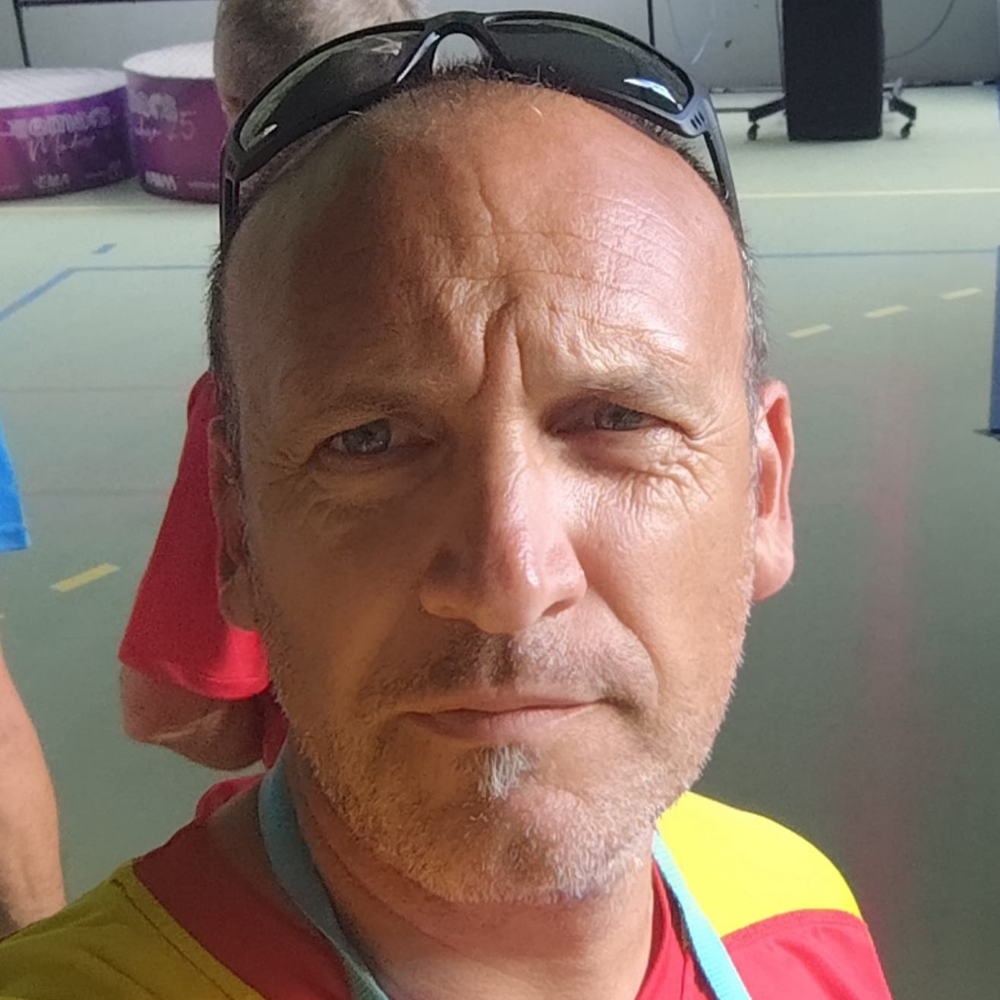
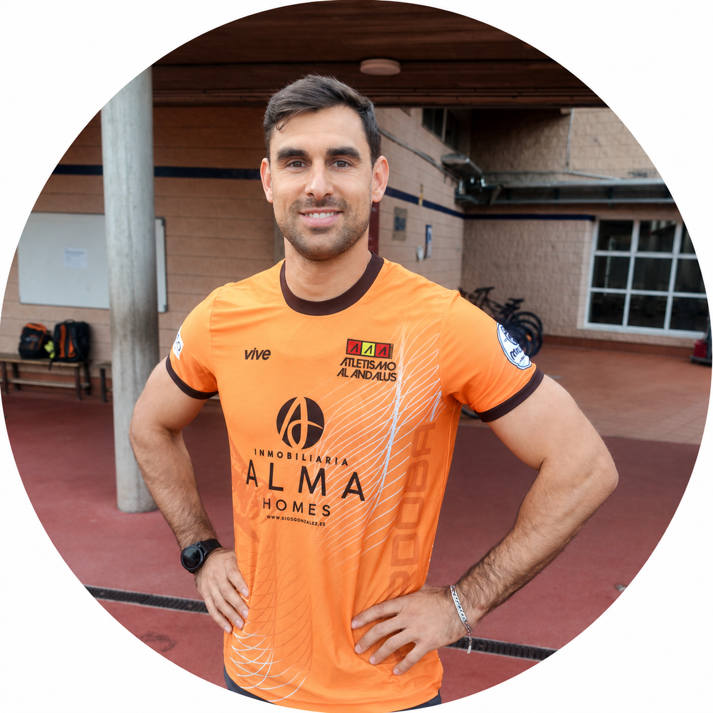

Sobre el Club
Nuestra Misión
El club de Atletismo Al-Ándalus nace en Córdoba con el objetivo de fomentar el deporte base y de competición. Buscamos transmitir valores como la disciplina, la humildad y la superación personal a los más peques de la casa, utilizando nuestras pistes en El Fontanar como nuestra segunda casa.
Nuestro Equipo Técnico
Fernando Ariza
Presidente / Entrenador Escuelas
Responsable de la dirección del club y especialista en lanzamientos.
Grupos: Sub-12, Lanzamientos

Jesús Segura
Vicepresidente / Director técnico / Entrenador nacional
Ex-atleta con amplia experiencia y entrenador con titulación nacional y de alto rendimiento deportivo. Especializado en pruebas de saltos y velocidad.
Grupos: Sub-12, Sub-14, Sub-16/18/20, Máster Federados
Cristina López
Secretaria Técnica y Atleta
Atleta en activo del club y responsable de la gestión administrativa.
Gestión: Administración y Licencias
Miguel Ángel Quesada
Entrenador Escuelas
Ex-atleta con amplia trayectoria técnica. Especializado en pruebas de saltos y velocidad.
Grupos: Sub-12, Sub-14, Sub-16/18/20
Rubén Zamorano
Entrenador Escuela
Especialista en la formación atlética de los más pequeños.
Grupos: Peques, Sub-8, Sub-10
Sofía
Entrenadora Escuela
Compañera de Rubén Zamorano en la formación de las categorías base. Especialista en iniciación deportiva y técnica fundamental a través del juego.
Grupos: Peques, Sub-8, Sub-10
Jesús García
Entrenador Escuela
Técnico especialista en la enseñanza y perfeccionamiento de los lanzamientos.
Grupos: Sub 12, Sub 14
Cristian Zamorano
Entrenador Escuela
Responsable del grupo de entrenamiento dirigido a padres y madres de nuestros atletas.
Grupos: Grupo 1 / 2: Padres
Enrique Fernández Reyes
Entrenador Escuela
Entrenador especializado en las disciplinas de medio-fondo, fondo y marcha.
Grupos: Sub 16, Sub 18, +

Javier López López
Colaborador Especialización
Atleta internacional con España con una formación en EEUU.
Grupos: Especialización en vallas
Irene Almarcha Conejero
Colaborador Especialización
Atleta formada en EEUU.
Grupos: Especialización en vallas